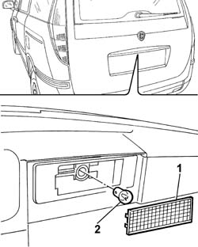

5540A90 CENTRE LIGHT CLUSTER REAR FOG LAMP/NO. PLATE LIGHT BULB - R.R.
- Path
- Procedures > 55 ELECTRICAL EQUIPMENT > 5540 EXTERIOR LIGHTING > 5540A LIGHTING > 5540A90 CENTRE LIGHT CLUSTER REAR FOG LAMP/NO. PLATE LIGHT BULB - R.R.
- Kind
- repair procedure (removal / refitting; the operation number is the code)
- Applies to
- all engines; all production periods
- Interactive page
- https://sloeber94.github.io/elrnDB-fUlss/en/#/179007572
Applies to: all engines; all production periods
 Removing
Removing
 Refitting
Refitting
Applies to: all engines; all production periods
Removing
Refitting